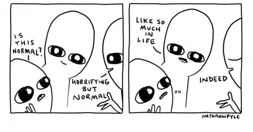

You shout
You rage
You want quit of it.
You push it away with all your strength.
But hear this. . .
It thrives on all the exercise
You give it.
It gets stronger when
You give it something to push up against...
The harder you struggle
The more surely you call the spider."
--Wayne Liquorman
"Look for what is looking."
--Sam Harris
A zillion years ago in one of my many depression phases, I’d watch TV at night and get more and more depressed as the night went on.
I looked very hard for why.
Not that knowing why would have changed anything.
I mean, nothing was happening, just me sitting there watching TV. Yet depression came every night, seemingly uncaused and tied to nothing.
I inevitably concluded I was just a screwed-up person who didn’t even need a cause to be a mess.
Then one day, don’t ask me how, I saw it.
All those TV shows and ads- especially the ads- depicting made-up people who had success, or love, or happiness, or some kind of “normal” life- they all triggered the painfully familiar thought,
“Others have it better than you. They are better than you. You? LOSER.”
Y'know, just that typical thought.
“Just”.
Just that commonplace, repetitive, had-it-a-million-times thought.
Which took me forever to see. Because I apparently expected the explanation to be something that stood out from the ordinary.
An announcement maybe: Yo yo yo! This right here! This is why!
Or trumpets. Sequins. Neon. Something big and obviously not usual.
Although, I was depressed a lot, so really how rare could the instigating thoughts have been?
No, the bringer of my depression was nothing out of the ordinary.
And I could never find the trigger.
Because it was part of my fabric.
I was repeatedly being built- constructed- on that thought.
The sense of the Me, the Judy, was being built on TV’s pretend scripts about pretend people living pretend lives.
Unknowingly, I was gathering up fictions to prove unprovable theories about who I was as a supposedly real Person.
Fiction was being used as proof of the fiction of self.
Dependent on ordinary thoughts which came out of nowhere, bringing along with them ordinary feelings.
Feelings which, simply by their apparent existence, "felt as if" they anchored the sense of me solidly to heaviness.
Heaviness being a great self anchor.
Even though it's nothing, holding down nothing.
So it doesn’t matter what any thought or explanation of feelings turns out to be.
It doesn’t, and can’t, prove fiction.
Because fiction is made up. Fiction isn't provable.
Those old ideas of “who I am,” turned out to be just ordinary everyday thoughts, carrying lovely feelings like depression to help the wacky self come to some (bad) conclusion about itself.
To make sure I didn’t forget I exist. Or to make sure not to notice that maybe I don’t.
Luckily, blessedly, these days I know that none of this has anything to do with me.
Thoughts visit out of nowhere, dropping by like homeless folks who know they can get a handout at this address.
They sometimes seem to be “about” who I am as a person.
But it doesn’t matter what nothing is about.
And even though thoughts sometimes lug feelings along with them, pretending that proves something about me,
It all comes and then goes.
And whatever it is that I am, it’s still here.
So it can’t be any of that here-and-then-not-here stuff.
Which makes any thought and feeling
nothing,
nothing special,
and certainly not
out of the ordinary.
Click here to watch Judy on Buddha at the Gas Pump
"This world offers
So many distractions
That it is difficult
To perceive
The magnificence of
What is ordinary.
The simpler things get
The more beautiful
This life becomes."
--wu'hsin
"Ram Tzu knows this...
There can be
Peace,
Wholeness,
Harmony,
Love,
Joy,
But when you are not there."
--Wayne Liqourman
